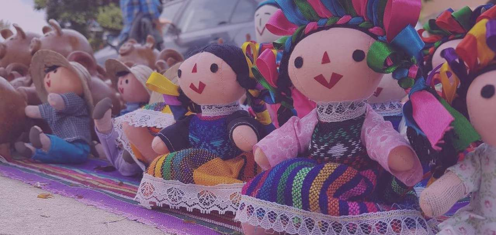

¿Sabías qué...?

Introducción
Ya que hay un nuevo presidente en Estados Unidos el cual no se siente atraido por los mexicanos. La vida de los mexicanos ha empeorado, aumnetando los gastos de las familias y disminuyendo la calidad de vida. Lo más importante es que los Estados Unidos no quieren hacer negocios con México y debemos mantenernos juntos por el país.

Los mexicanos estamos acostumbrados a comprar cosas que vienen de EU, por lo que ahora que el nuevo presidente de EU rompio el tratado de comercio que se tenia, sera mas dificil el obtener estos productos y tambien el vender los nuestros, por lo que la mejor opción sería el comprar nuestros productos a los que llegan, los cuales seran mas baratos.